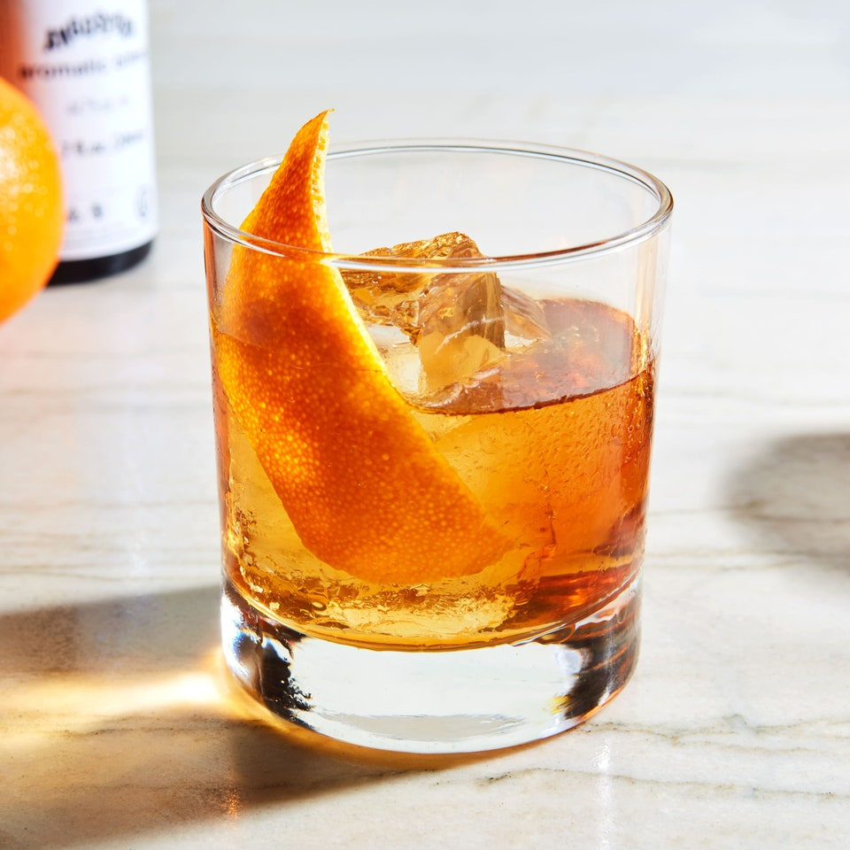

Bourbon Old Fashioned

Description
The original cocktail, the OG, the one who started it all...
The Bourbon Old Fashioned. With just 5 ingredients you too can
make this classic drink.
Ingredients
- 1 teaspoon simple syrup
- 2 dashes Angostura Bitters (or more if you're daring)
- 1 slice of orange peel
- 2 ounces bourbon
- 1 maraschino cherry
Directions
- Combine simple syrup and bitters in an old-fashioned glass
- Stir
- Add enough ice to fill glass
- Squeeze orange peel over glass to extract oils
- Add peel to glass
- Add Bourbon
- Stir until drink is cold and alchohol bite has softened
- Garnish with cherry, swizzle stick, and straw